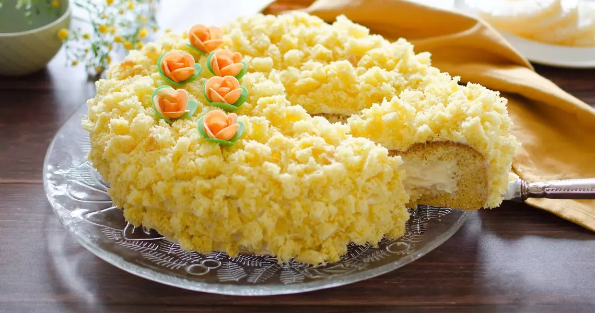

La nostra selezione di ristoranti

I dolci tipici romani incantano i palati nella capitale italiana. Tra i protagonisti spiccano i "maritozzi con panna", soffici panini
dolci colmi di crema, perfetti per una pausa golosa. Imperdibile è la "ricotta e visciole", una torta soffice con ricotta fresca e ciliegie
selvatiche. Durante le festività, i "bignè di San Giuseppe" deliziano con la loro crema e decorazioni.
I "ciambellini al vino" sono un classico secolare: friabili, preparati con vino bianco e zucchero a velo. Questi dolci raccontano la storia
gastronomica di Roma, offrendo un'esperienza autentica e indimenticabile. Scopri i sapori iconici della Città Eterna!
Pasticceria Bompiani a Roma: il paradiso dei dolci artigianali
A Roma, la pasticceria Bompiani è un'istituzione per gli amanti dei dolci artigianali. Fondata nel 1972 da Walter Musco, la pasticceria è famosa
per i suoi dolci creativi e innovativi, realizzati con ingredienti di alta qualità. La pasticceria Bompiani offre un'ampia varietà di dolci, dai
classici della tradizione italiana ai dolci più moderni e innovativi. Tra i dolci più famosi della pasticceria Bompiani troviamo:
1. torta Mont Blanc: una torta classica con crema di marroni, panna montata e savoiardi;
2. torta Sacher: una torta al cioccolato con ganache e marmellata di albicocche;
3. torta Saint Honoré: una torta con pasta choux, crema pasticcera e chantilly;
4. torta mimosa: una torta a strati con crema pasticcera e pan di spagna;
5. torta Paradiso: una torta con pasta sfoglia, crema pasticcera e crema chantilly.
Oltre ai dolci, la pasticceria Bompiani è anche famosa per i suoi gelati artigianali, che vengono realizzati con frutta fresca e latte di alta qualità.
I gusti più popolari includono cioccolato, pistacchio, fragola e crema.

Pasticceria Tornatora a Roma: la tradizione del gusto
A Roma, la pasticceria Tornatora è un'istituzione per gli amanti dei dolci tradizionali italiani. La pasticceria è stata fondata nel 1975 dai fratelli Tornatora,
che hanno voluto creare un luogo dove le persone potessero gustare i sapori della tradizione.
La pasticceria Tornatora conta tre sedi a Roma: in via Oderisi da Gubbio, in via Portuense e in viale della Grande Muraglia. In tutte e tre le sedi, i clienti
possono trovare un'ampia varietà di dolci tradizionali italiani, realizzati con ingredienti di alta qualità.
I dolci della pasticceria Tornatora sono realizzati con ricette tradizionali, tramandate da generazioni. Gli ingredienti sono selezionati con cura e i dolci vengono
preparati con amore e passione.
Pasticceria Pompi a Roma: il tiramisù più famoso del mondo
A Roma, la pasticceria Pompi è famosa per il suo tiramisù, che è considerato uno dei migliori al mondo. La pasticceria Pompi è stata fondata nel 1960 da Iginio
Massari, un maestro pasticciere italiano. Massari ha creato la ricetta del tiramisù Pompi nel 1969, e da allora il dolce è diventato un successo internazionale.
Il tiramisù Pompi è realizzato con ingredienti di alta qualità, tra cui savoiardi artigianali, mascarpone fresco e caffè espresso. I savoiardi sono inzuppati nel
caffè espresso, quindi vengono alternati a strati di crema al mascarpone. Il tiramisù è poi ricoperto di cacao amaro e lasciato riposare in frigorifero per almeno
un'ora prima di essere servito.
Il tiramisù Pompi è un dolce cremoso e delicato, con un sapore ricco e intenso. È il dolce perfetto per una pausa golosa o per un dessert dopo cena.
La pasticceria Pompi offre anche un'ampia varietà di altri dolci, tra cui torte, pasticcini e gelati.
Pasticceria Two Sizes: il tiramisù in due dimensioni
Il tiramisù Two Sizes è realizzato con ingredienti di alta qualità, tra cui savoiardi artigianali, mascarpone fresco e caffè espresso. I savoiardi sono
inzuppati nel caffè espresso, quindi vengono alternati a strati di crema al mascarpone. Il tiramisù è poi ricoperto di cacao amaro e lasciato riposare in
frigorifero per almeno un'ora prima di essere servito. La versione classica del tiramisù Two Sizes è servita in una piccola tazza ed è perfetta per una
pausa golosa. La versione XL, invece, è servita in un piatto ed è ideale per una cena o un evento speciale. Il tiramisù Two Sizes è un dolce cremoso e
delicato, con un sapore ricco e intenso. È il dolce perfetto per gli amanti del tiramisù, ma anche per chi cerca un dolce originale e gustoso.
Pasticceria De Santis Santa Croce: una tradizione di oltre un secolo
A Roma, la pasticceria De Santis Santa Croce è stata fondata nel 1920 da Giovanni De Santis, che ha voluto creare un luogo dove le persone potessero gustare
i sapori della tradizione.
La pasticceria De Santis Santa Croce si trova nel centro storico di Roma, in via di Santa Croce in Gerusalemme 17/21. È un locale accogliente e familiare, dove
si respira l'atmosfera della vecchia Roma. La pasticceria De Santis Santa Croce è famosa per i suoi dolci tradizionali italiani, realizzati con ingredienti di
alta qualità. Tra i dolci più famosi della pasticceria De Santis Santa Croce troviamo: la torta Sacher, la torta mimosa e il tiramisù.

Pasticceria Gruè: un'esperienza sensoriale
A Roma, la pasticceria Gruè è un'esperienza sensoriale. È un luogo dove la passione per i dolci si fonde con l'arte e il design. La pasticceria Gruè si trova nel
quartiere Trieste, in viale Regina Margherita 95. È un locale elegante e raffinato, con un'atmosfera intima e accogliente. La pasticceria Gruè è famosa per i suoi
dolci creativi e originali. I dolci sono realizzati con ingredienti di alta qualità e con tecniche di lavorazione innovative.
Tra i dolci più famosi della pasticceria Gruè troviamo:
1. torta "Noisette": una torta a strati con ganache al cioccolato e crema nocciola;
2. torta "Cioccolato e lamponi": una torta al cioccolato con mousse ai lamponi;
3. macaron: un dolce francese a base di pasta di mandorle, zucchero e albume.
Pasticceria Regoli
La pasticceria Regoli a Roma è una delle pasticcerie più antiche e rinomate della città. È stata fondata nel 1916 dai fratelli Regoli, che hanno voluto creare
un luogo dove le persone potessero gustare i sapori della tradizione. La pasticceria Regoli si trova nel centro storico di Roma, in via dello Statuto 60. È un
locale accogliente e familiare, dove si respira l'atmosfera della vecchia Roma. La pasticceria Regoli è famosa per i suoi dolci tradizionali italiani, realizzati
con ingredienti di alta qualità. Tra i dolci più famosi della pasticceria Regoli troviamo:
1. cassata siciliana: un dolce tipico della Sicilia, realizzato con pan di spagna, ricotta, canditi e cioccolato fondente;
2. pastiera napoletana: un dolce tipico della Campania, realizzato con grano cotto, ricotta, uova e canditi;
3. tiramisù: un dolce classico della cucina italiana, realizzato con savoiardi, caffè espresso e crema al mascarpone.
La pasticceria Regoli offre anche una vasta gamma di altre prelibatezze, tra cui torte, pasticcini e gelati. diventando un luogo ideale per gli amanti dei dolci.
I dolci sono deliziosi e realizzati con ingredienti di alta qualità.